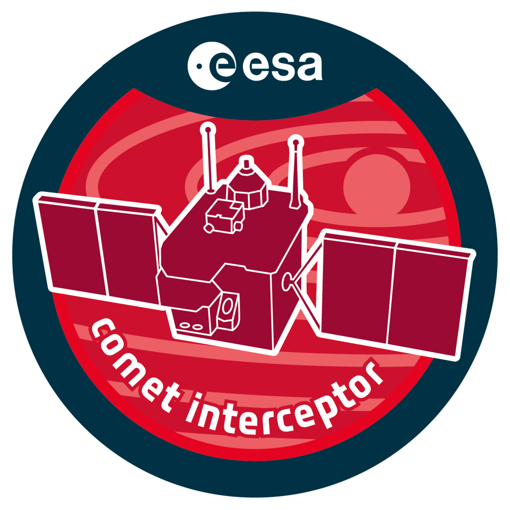

CoCa optical bench integration at University of Bern cleanroom facility
CURRENT
ESA F-Class Mission
Comet Camera (CoCa)
Comet Interceptor Mission
Leading optical AIV activities for the Comet Camera instrument — a high-resolution imaging system designed to capture the first close-up images of a pristine, dynamically new comet entering the inner solar system.
My Role
- → Established and commissioned ISO 5 cleanroom integration facility from scratch
- → Delivered flight-representative optical bench meeting WFE, MTF, and co-alignment requirements
- → Authored ECSS-compliant AIT procedures, test scripts, and verification reports
- → Developed PSF-based hexapod control system for telescope alignment
TECHNICAL DETAILS
Mission
ESA Comet Interceptor (F2)
Phase
C/D/E (Implementation)
Institution
University of Bern
Key Technologies
Zemax
Python
Hexapods
PSF Analysis
ECSS